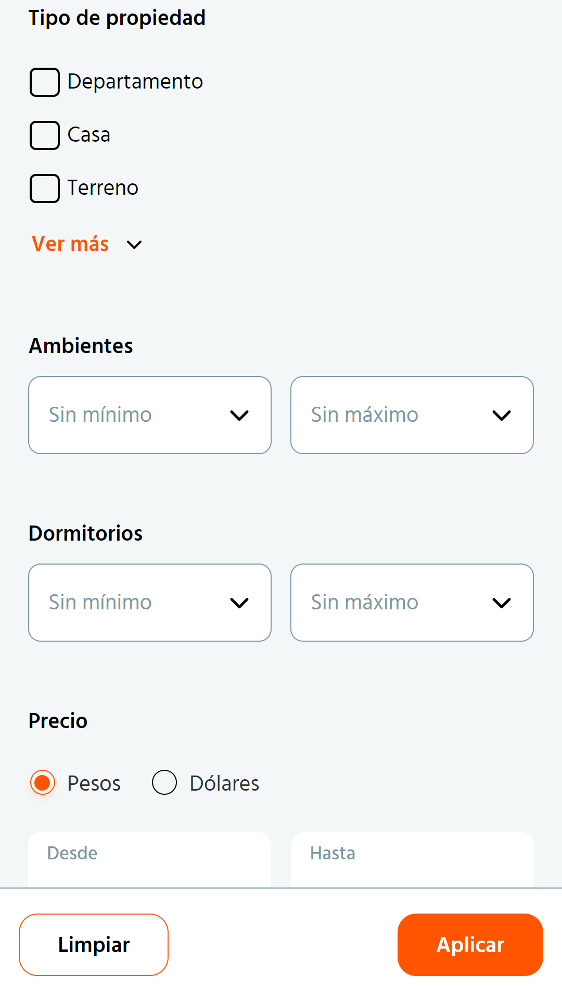
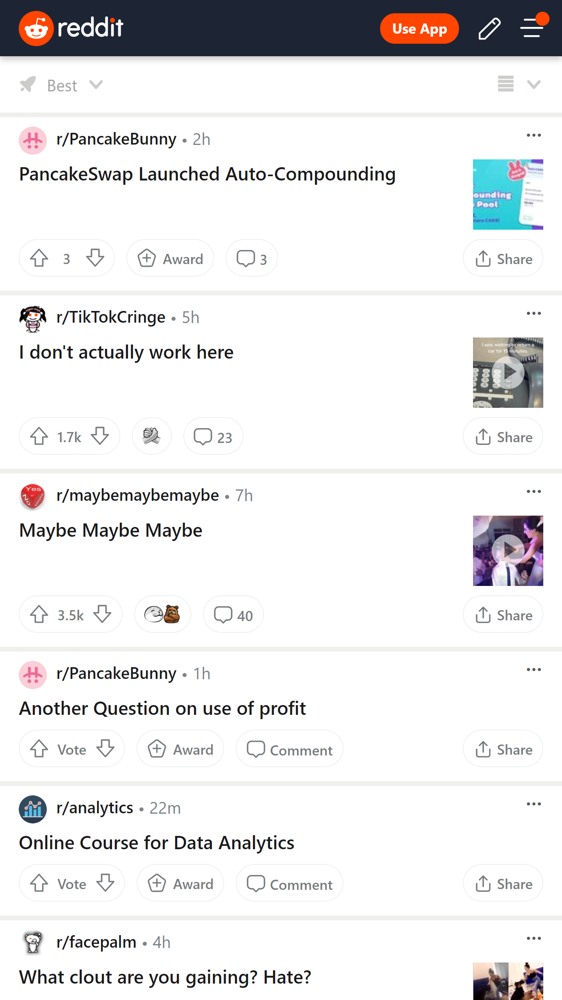
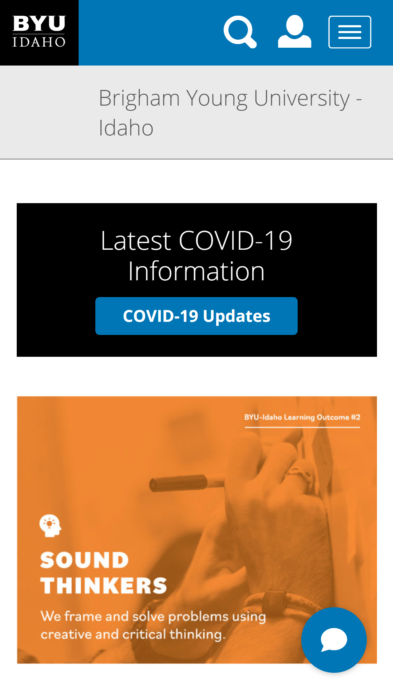

Hick's Law
ZonaProp
https://www.zonaprop.com.ar/
The filter menu has the right amount of options for it to show specifically what the user wants without having them feel overwhelmend.
The options are also grouped in sub sections that help the user focus solely on what matters to them while skipping unnecesary parameters .
PARC: Proximity

Each subreddit's name is located close to it's logo and have the title of the post slightly larget below it to signify they belong together.
Action buttons are grouped together below the main text and everything is framed within a rectangle box that implies they belong to the same post information.
PARC: Alignment
BYU-Idaho
https://www.byui.edu/
The search icon, log-in icon and menu icon are all the same size and vertically aligned.
There is top and bottom vertical alligment between the icons to the right and the BYU Idaho logo and box to the left.
There is an invisible line that acts as a left-margin for the BYU Idaho text-logo. and the border of the content boxes below, as well as with the right margin of the menu icon and the end of the border for the content boxes.